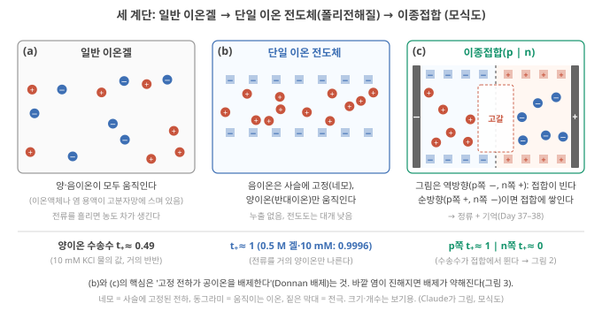
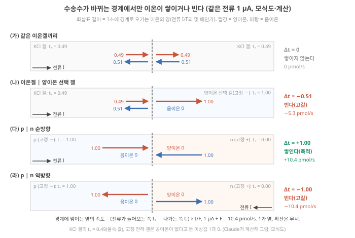
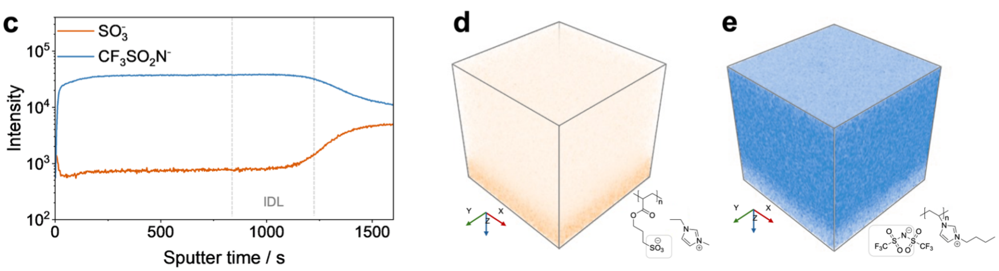
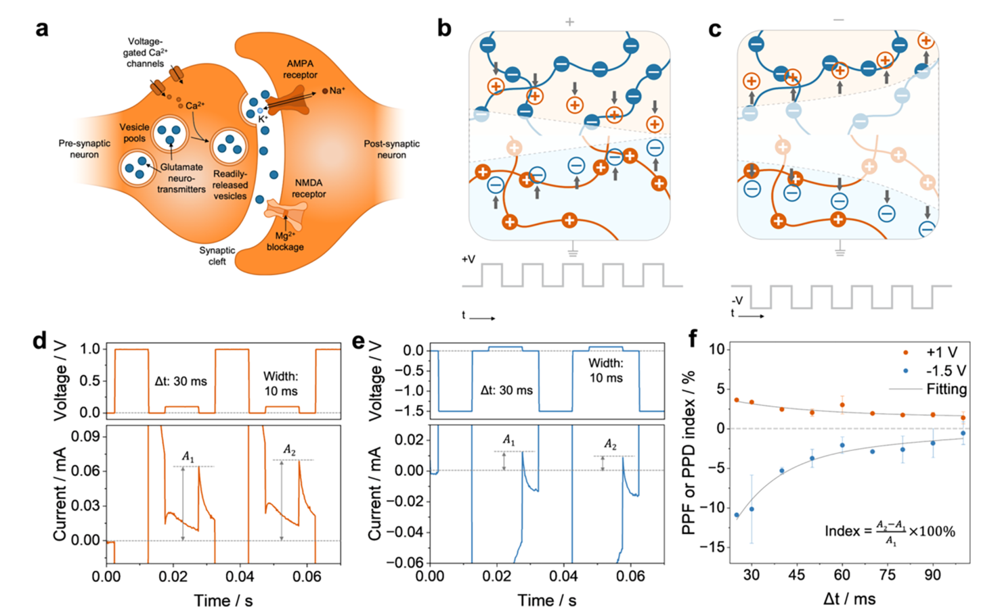
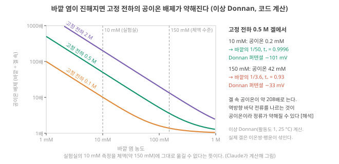
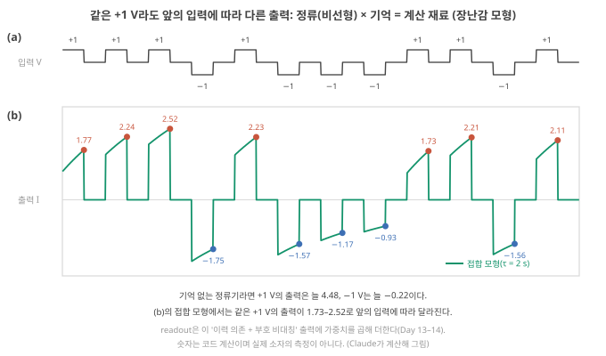
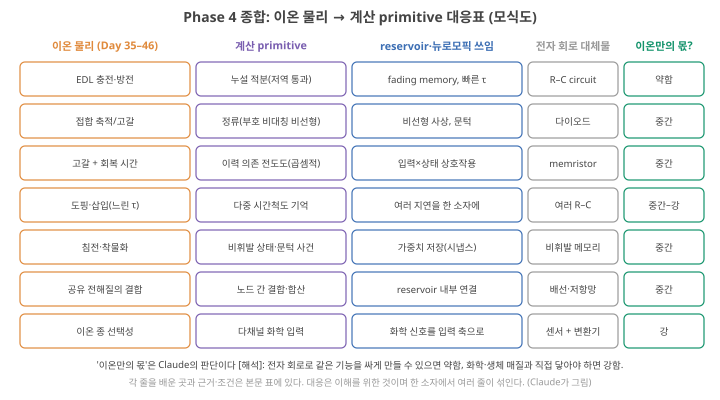

Day 40. single-ion·polyelectrolyte·heterojunction, Phase 4 종합
Phase 4 · 왜 이온성 고분자인가
이번 질문 — single-ion conductor·polyelectrolyte·heterojunction은 어떤 고유 이점이 있는가? 일반 ionogel보다 반드시 유리한가?
사전 테스트 (선택)
사전 테스트 펼치기 · 배우기 전에 짐작해 보는 문제 (선택)
학습자료
Phase 4의 마지막 날입니다. 오늘 질문은 사용자의 연구 소재에 가장 가깝습니다. single-ion conductor, polyelectrolyte, heterojunction은 어떤 고유한 이점이 있나? 그리고 일반 이온겔보다 반드시 유리한가? 이 질문에 답한 뒤, Day 33–40 전체를 하나의 표로 묶습니다. 이온 물리 → 계산 primitive(계산을 이루는 기본 부품)의 대응표입니다.
먼저 밝혀 둡니다. 이 날의 내용은 사용자가 직접 다뤄 온 계(anionic/cationic polyelectrolyte heterojunction, ionic diode, depletion layer)와 겹칩니다. 아래의 그림과 계산은 그 경험을 정답으로 삼지 않고, 폴더 원문과 단순 모형으로 다시 세운 것입니다. 내 데이터와 다르면 내 데이터가 우선입니다.
- 일반 이온겔, 단일 이온 전도체(폴리전해질), 이종접합은 무엇이 다른가? 전류의 몇 할을 어느 이온이 나르고(수송수), 그것이 어디에서 이온을 쌓고 비우나?
- 이종접합의 정류·고갈 비선형·다중 시간상수는 어디서 오고, 연구는 어디까지 왔나?
- 폴리전해질·이종접합은 일반 이온겔보다 반드시 유리한가? 어떤 조건에서 유리하고 어떤 조건에서 불리한가?
- 정류, 고갈, 다중 시간상수는 각각 어떤 계산 primitive가 되나?
- Phase 4 종합: 이온 물리에서 계산 primitive까지 한 장으로, 그리고 이 Phase에서 바뀐 가정은?
1. 세 계단: 일반 이온겔 → 단일 이온 전도체 → 이종접합
이 구간을 읽고 나면 일반 이온겔, 단일 이온 전도체(폴리전해질), 이종접합의 차이를 "누가 움직이고 누가 묶여 있나"와 수송수(숫자 하나)로 설명하고, 수송수가 바뀌는 경계에서 이온이 쌓이거나 빈다는 것을 계산해 이종접합이 정류하는 이유를 단계별로 말할 수 있다.
single-ion conductor·polyelectrolyte·heterojunction 정류
① 왜 필요한가. 이온 소자의 재료를 고를 때 "이온겔이냐 폴리전해질이냐"는 단순한 재료 선택이 아니라, 어떤 이온이 움직일 수 있느냐의 선택입니다. 그것이 Day 35–36의 메커니즘(EDL, 농도 분극, 고갈) 가운데 무엇이 일어날지를 정합니다.
② 무엇인가: 세 계단(그림 1).
- 일반 이온겔: 고분자망에 이온액체(양이온과 음이온만으로 된 액체)나 염 용액이 스며 있습니다. 양이온과 음이온이 모두 움직입니다. 전류를 흘리면 한쪽에는 양이온이, 다른 쪽에는 음이온이 쌓여 농도 차가 생깁니다.
- 단일 이온 전도체(single-ion conductor): 한쪽 부호의 이온이 고분자 사슬에 공유결합으로 묶여 움직이지 못하고, 반대 부호의 이온(반대이온)만 움직입니다. 고분자에 전하가 붙은 폴리전해질(polyelectrolyte)이 대표적이고, 이온액체 단위를 고분자로 만든 poly(ionic liquid)도 같은 범주입니다. Balqis 2026은 이것을 "움직이는 이온이 전하를 띤 고분자 주사슬에 짝이온으로 매인" 재료로 설명합니다. Balqis 2026, p.27067
- 이종접합(heterojunction): 고정 음전하 재료(양이온만 나름, p형이라고도 함)와 고정 양전하 재료(음이온만 나름, n형)를 맞붙인 것입니다. Wang 2025는 음전하 망과 양전하 망이 만나는 이온 p–n 접합에서 "두 겹의 정전기적 반발이 이온을 한 방향으로만 지나가게 해" 독특한 정류가 생긴다고 정리합니다. Wang 2025 (Chem. Soc. Rev.), p.306
③ 무슨 일이 어떤 순서로(이종접합).
단계 1 — 왜 한쪽 이온만 들어가나. 고정 전하는 같은 부호의 이동 이온(공이온)을 밀어냅니다(Day 35–36의 Donnan 배제, Day 35 기초). 그래서 p형 쪽에는 양이온만, n형 쪽에는 음이온만 움직일 수 있습니다.
단계 2 — 순방향. p형에 (+), n형에 (−)를 걸면 두 쪽의 반대이온이 모두 접합을 향해 밀려 접합에 쌓입니다. 전도도가 오르고 전류가 큽니다.
단계 3 — 역방향. 전압을 뒤집으면 두 반대이온이 모두 접합에서 멀어지고, 접합을 다시 채울 이온이 없습니다(공이온은 배제되므로). 접합은 이온이 빠진 고갈층이 되어 전류가 작습니다.
단계 4 — 정류와 기억. 같은 크기의 전압에서 방향에 따라 전류가 다르니 정류(비선형)이고, 쌓이고 빠지는 데 이온이 실제로 움직여야 하니 시간이 걸리고 이력이 남습니다(기억). Day 35 3구간의 장난감 모형이 이 물리를 상태 하나로 흉내 낸 것이었습니다(Day 35 3구간).
④ 이름과 정확한 뜻. 단일 이온 전도체 = 한 부호의 이온만 움직이는 이온 전도체. 폴리전해질 = 사슬에 이온기가 붙은 고분자(그 반대이온이 움직임). 이종접합 정류 = 고정 전하의 부호가 다른 두 재료의 접합에서, 고갈과 축적이 방향에 따라 갈려 전류가 한쪽으로 잘 흐르는 것.
⑤ 뉴로모픽·RC와의 연결. 일반 이온겔은 양·음이온이 다 움직이므로 전극에 EDL을 만들고 덩어리에 농도 분극을 만들지만, 정류를 만들려면 계면·형상의 비대칭이 따로 필요합니다. 이종접합은 재료의 고정 전하 자체가 비대칭을 주므로, 정류(비선형)와 고갈·회복(기억)이 접합 하나에서 함께 나옵니다. 이것이 오늘 질문의 "고유한 이점" 후보입니다. 그것이 실제로 이점인지는 3구간에서 조건을 붙여 봅니다.
⑥ 짧은 확인. 단일 이온 전도체 두 개를 같은 부호끼리(둘 다 고정 음전하) 붙이면 정류가 생길까요? (답: 이종접합의 정류는 거의 생기지 않는다. 양쪽 모두 양이온이 움직여 역방향에서도 접합이 고갈되지 않는다. Lee 2026 (AFM)의 같은 재료 대조군이 그 예다.)

1-1. 수송수: 전류의 몇 할을 누가 나르나
수송수(transference number, t): 전류 가운데 각 이온이 나르는 몫
① 왜 필요한가. 그림 1은 "누가 묶이고 누가 움직이나"를 그림으로 보였습니다. 이것을 숫자 하나로 적으면 세 재료를 같은 눈금에 놓을 수 있고, 전류를 흘릴 때 어디에서 이온이 쌓이고 비는지(농도 분극, Day 35 기초)를 미리 셀 수 있습니다. 그 숫자가 수송수입니다.
② 무엇인가. Day 39에서 전도도는 움직이는 이온 종류마다의 몫 \(n_i|z_i|e\mu_i\)를 더한 것이었습니다(\(n\) 움직일 수 있는 이온의 수, \(|z|e\) 이온 하나의 전하 크기, \(\mu\) 이동도, Day 39 기초). 그 몫 하나를 전체로 나눈 것이 그 이온의 수송수(transference number, 운반수라고도 함)입니다.
\[ t_i = \frac{n_i |z_i| e \mu_i}{\sum_j n_j |z_j| e \mu_j}, \qquad \sum_i t_i = 1 \]
- 뜻: 전류 가운데 이온 \(i\)가 나르는 비율(0–1, 단위 없음). 양이온 수송수 \(t_+ = 0.7\)이면 전류의 70%를 양이온이, 30%를 음이온이 나릅니다. 1가 염이면 \(t_- = 1 - t_+\).
- 고정 전하는 움직이지 않으므로(\(\mu = 0\)) 몫이 0입니다. 고정 전하가 많은 재료일수록 반대이온 한 종이 전류를 거의 다 나릅니다.
- 수송수는 재료만의 상수가 아닙니다. 바깥 염 농도·온도에 따라 바뀝니다(3구간).
③ 세 재료의 숫자(그림 1 아래 줄).
- 일반 전해질·이온겔: 10 mM KCl 물에서 K⁺의 몫은 0.074 S/m, Cl⁻의 몫은 0.076 S/m였습니다(Day 39 ③). \(t_+ = 0.074 \div 0.150 \approx 0.49\), 거의 반반입니다(무한 희석 몰 이온 전도도 표 값 K⁺ 73.5, Cl⁻ 76.4 S·cm²/mol, 25 °C로도 0.49). 이온액체를 품은 이온겔도 두 이온이 다 움직이므로 \(t_+\)는 0과 1 사이이고, 값은 두 이온의 이동도 비로 정해집니다(이온액체별 값은 여기서 다루지 않습니다).
- 단일 이온 전도체: 고정 음전하 0.5 M 겔을 10 mM KCl에 담그면, Day 35–36과 같은 이상 Donnan 계산으로 겔 속 K⁺는 500.2 mM, Cl⁻는 0.2 mM입니다(3구간 그림 3). 겔 속 두 이온의 이동도가 같다고 어림하면 \(t_+ = 500.2 \div (500.2 + 0.2) = 0.9996\). 용매도 공이온도 없는 무용매 PIL이라면 이상적으로 \(t_+ = 1\)입니다. 물속에서 쓰는 이온교환막(양이온 교환막·음이온 교환막, 위 첫 영상)이 바로 이런 재료이고, 막의 "선택도"는 반대이온의 수송수로 잽니다(3-1).
- 이종접합: 한 소자 안에서 수송수가 접합을 경계로 뛴다는 것이 핵심입니다. p쪽은 \(t_+ \approx 1\), n쪽은 \(t_+ \approx 0\)(전류를 거의 음이온이 나름)입니다.
④ 수송수가 바뀌는 경계에서 이온이 쌓이거나 빈다.
같은 전류 1 µA를 흘립니다. (가) 같은 KCl 겔 두 조각의 경계, (나) KCl 겔과 양이온 선택 겔의 경계, (다) p | n 접합 가운데 이온이 쌓이지도 비지도 않는 곳은? 가장 빨리 쌓이거나 비는 곳은? 먼저 적고 단계를 넘기세요.
단계 1 — 양이온 세기. 전류 \(I\)가 영역 1에서 영역 2로 흐릅니다. 양이온은 전류와 같은 방향으로 움직이므로, 1초에 영역 1에서 경계로 \(t_+^{(1)} I/F\) mol이 들어오고 영역 2로 \(t_+^{(2)} I/F\) mol이 나갑니다. \(F\) = 96485 C/mol(패러데이 상수)은 1가 이온 1 mol이 나르는 전하라서, \(I/F\)는 "1초에 지나가는 전하를 이온 몰수로 바꾼 값"입니다.
단계 2 — 음이온 세기. 음이온은 전류와 반대로 움직입니다. 영역 2에서 경계로 \((1 - t_+^{(2)}) I/F\)가 들어오고, 영역 1로 \((1 - t_+^{(1)}) I/F\)가 나갑니다.
단계 3 — 정리. 들어온 것에서 나간 것을 빼면 양이온과 음이온이 같은 양씩 남거나 모자랍니다. 그래서 경계는 전기적으로 중성인 채로 염이 쌓이거나 빕니다.
\[ \frac{dN_{\text{염}}}{dt} = \left(t_+^{(1)} - t_+^{(2)}\right)\frac{I}{F} \]
\(N_{\text{염}}\)은 경계에 쌓인 염의 몰수, 괄호 \(\Delta t\)는 "전류가 들어오는 쪽 \(t_+\) − 나가는 쪽 \(t_+\)"입니다. 양수면 쌓이고(축적), 음수면 빕니다(고갈). \(\Delta t = 0\)이면 전류가 아무리 커도 쌓이지 않습니다. 쌓인 것을 확산이 다시 퍼뜨리는 효과는 여기서 뺐습니다(그것이 회복, 곧 기억이 사라지는 쪽입니다).
단계 4 — 숫자(그림 2). \(I\) = 1 µA이면 \(I/F = 10^{-6} \div 96485 = 1.04\times10^{-11}\) mol/s, 곧 1초에 약 10 pmol입니다. (가) 같은 겔끼리: \(\Delta t = 0.49 - 0.49 = 0\), 쌓이지 않습니다. (나) KCl 겔 → 양이온 선택 겔: \(0.49 - 1 = -0.51\), 1초에 약 5.3 pmol씩 경계가 빕니다(Day 35–36 영상의 '이온 농도 분극'). (다) p | n 순방향: \(1 - 0 = +1\), 10.4 pmol/s씩 쌓입니다. 역방향이면 전류가 n에서 p로 흐르므로 \(0 - 1 = -1\), 10.4 pmol/s씩 빕니다. 같은 크기의 전류에서 부호만 바꿔도 쌓임과 빔이 뒤집히는 것이 정류와 기억의 출발점입니다. 같은 부호끼리 붙인 p | p는 \(1 - 1 = 0\)이라 정류가 없습니다(위 기초 상자 ⑥의 같은 재료 대조군과 같은 결론).

⑤ 그래서 재료마다 무엇이 바뀌나.
| 재료 | 움직이는 이온 | \(t_+\) (예) | 수송수가 뛰는 곳 = 분극이 생기는 곳 | 정류 | 기억의 자리 |
|---|---|---|---|---|---|
| 일반 이온겔 | 양·음이온 | 약 0.49 (10 mM KCl) | 전극 앞뿐(전극은 이온을 통과시키지 않거나 한 종만 받아들임) | 재료만으로는 없음. 전극·형상의 비대칭이 따로 필요 | 전극의 EDL과 그 회복(Day 35–36·Day 37) |
| 단일 이온 전도체 | 반대이온만 | 약 1 | 덩어리 안은 \(\Delta t = 0\)이라 농도 차가 생기지 않고, 전극 앞에서만 | 혼자서는 없음 | 전극 앞(반대이온이 모이거나 떠나 고정 전하가 드러난 층) 해석 |
| 이종접합 | p쪽 양이온, n쪽 음이온 | 1 → 0 | 재료 한가운데의 접합(\(\Delta t = \pm 1\), 전류 방향에 따라 부호가 바뀜) | 있음 | 접합의 축적·고갈(Day 35–36 장난감 모형) |
단일 이온 전도체 줄의 "덩어리에 농도 차가 생기지 않는다"는 리튬 전지 전해질에서 오래 알려진 결과입니다. Doyle·Fuller·Newman(Electrochim. Acta 39, 2073, 1994)의 전지 모사에서 수송수 1인 고분자 전해질은 전도도가 10배 낮아도 수송수 0.2인 전해질보다 높은 방전 속도에서 성능이 좋았고, 그 이유는 수송수 0.2인 쪽에 큰 농도 차가 생겨 전해질이 고갈되기 때문이었습니다 [폴더 밖: 초록으로 확인]. 반대로 말하면 수송수 1인 재료는 덩어리 안에서 농도 분극으로 생기는 느린 기억도 없습니다. 기억이 필요하면 그것을 어디에 둘지(전극 앞이나 접합)를 따로 설계해야 합니다 해석.
⑥ 뉴로모픽과의 연결. 이종접합의 이점을 수송수로 말하면 이렇습니다. 고정 전하의 부호를 바꿔 배치하면 분극이 일어날 자리(\(\Delta t\)가 뛰는 곳)를 전극이 아니라 재료 안의 원하는 곳에 둘 수 있고, 그 자리의 쌓임·빔이 전압 부호에 따라 갈립니다 해석. 일반 이온겔로 같은 일을 하려면 전극이나 형상의 비대칭을 따로 만들어야 합니다. 그 이점이 실제로 있는지 보이는 실험은 3-1에 모았습니다.
- 이온겔: 양·음이온 모두 이동. 단일 이온 전도체(폴리전해질·poly(ionic liquid)): 반대이온만 이동 Balqis 2026, p.27067.
- 이종접합: 고정 전하의 부호가 다른 두 재료. 순방향 축적, 역방향 고갈 → 정류 + 기억 Wang 2025 (Chem. Soc. Rev.), p.306.
- 같은 부호끼리 붙이면 접합 정류는 거의 없다(같은 재료 대조군).
- 수송수 \(t_i\) = 이온 \(i\)의 전도도 몫 ÷ 전체. 10 mM KCl 0.49, 0.5 M 고정 전하 겔(10 mM) 0.9996, 이종접합은 접합에서 1 → 0으로 뛴다.
- 경계에 쌓이는 속도 = (들어오는 쪽 \(t_+\) − 나가는 쪽 \(t_+\)) × \(I/F\). 1 µA에서 p | n은 ±10.4 pmol/s, 같은 겔끼리는 0(Claude 계산).
2. 이종접합의 정류·고갈·다중 시간상수: 폴더는 어디까지 보였나
이 구간을 읽고 나면 폴더의 이종접합 소자들이 정류·고갈·시간상수에 대해 무엇을 보였는지(그리고 정류비가 소자마다 얼마나 다른지) 숫자로 말하고, 고갈을 직접 본 증거와 간접 증거를 구분하며, 이 소재 계열의 연구 현황·한계·넘을 과제를 적을 수 있다.
고갈층을 직접 보았나. 이종접합 논문 대부분은 고갈을 전류·임피던스로 간접 추론합니다. Lee 2026 (AFM)은 히알루론산–키토산 하이드로겔 접합의 역방향 저항이 같은 재료 접합의 약 35배라는 임피던스 비교로 고갈을 뒷받침했습니다(Day 35–36). Lee 2026 (AFM), p.4 Balqis 2026은 한 걸음 더 나아가, 폴리음이온 PIL(poly[EMIm][SPA])과 폴리양이온 PIL(poly[BVIm][TFSI])을 쌓은 접합의 깊이에 따른 성분 분포를 비행시간 이차이온 질량분석(TOF-SIMS: 이온빔으로 표면을 깎아 가며 깊이별 성분을 재는 방법)으로 보였습니다. 접합면 근처에서 한쪽 이온 신호가 줄고 다른 쪽이 늘어나는 구간이 있고, 저자들은 그 사이를 이온 고갈층(IDL)으로 표시합니다. Balqis 2026, p.27067, Fig. 1 다만 이것은 한 시료의 분포 하나이고, 전압을 바꿔 가며 잰 것이 아니며, 저자들도 고갈층의 폭을 정량하지 못했다고 씁니다. Balqis 2026, p.27069 전압에 따라 고갈이 달라진다는 근거는 보충자료의 라만 측정(Fig. S9)으로 제시되었는데, 보충자료는 확인하지 못했습니다 미확인. 다만 TOF-SIMS는 전압을 끈 뒤 진공에서 재는 방법이라, 동작 중의 분포와 같다고 보려면 조심해야 합니다. 해석
원문 그림 읽는 법(아래 Balqis 2026 Fig. 1c–e): c의 가로축 '스퍼터 시간'은 이온빔으로 시료를 깎아 들어간 시간이라 깊이로 읽습니다. 시료는 폴리음이온 PIL 위에 폴리양이온 PIL을 스핀코팅한 얇은 막이어서, 오른쪽으로 갈수록 위층(폴리양이온 쪽)에서 아래층(폴리음이온 쪽)으로 들어갑니다. Balqis 2026, p.27069 세로축은 검출된 음이온 세기(로그 눈금)입니다. 파랑 CF₃SO₂N⁻은 위층의 이동 음이온 TFSI⁻, 주황 SO₃⁻는 아래층 사슬에 묶인 음이온의 표지입니다. d와 e는 같은 두 이온의 3차원 분포이고, Z축(아래 방향)이 깊이입니다.

정류는 얼마나 강한가. 정류비(같은 크기의 순방향·역방향 전압에서의 전류 비, Day 35 기초)는 소자마다 크게 다릅니다.
| 소자 | 재료 | 정류·비대칭의 숫자 | 출처 |
|---|---|---|---|
| 이온 다이오드(침전 연구) | PSPA/PDADMAC 하이드로겔, 10 mM KCl | 정류비 \(I(+1\,\text{V})/I(-1\,\text{V}) > 10\)인 소자만 실험에 사용 | Han 2023, p.9 |
| HA–CS 접합 | 천연 고분자 하이드로겔, 10 mM KCl, pH 6 | 역방향 저항이 같은 재료 접합의 약 35배 | Lee 2026 (AFM), p.4 |
| PIL 이종접합 | 무용매 poly(ionic liquid), PEGDA 가교 | 20 °C에서 정류비 2.5 | Balqis 2026, p.27071 |
같은 "이종접합"이라도 폴더에 보고된 정류비는 2.5(Balqis)에서 10 이상(Han의 선별 기준)까지 흩어져 있고, 같은 조건에서 나란히 잰 값은 없습니다. 측정 조건도 정류비를 바꿉니다. Lee 2026 (AFM)은 전압을 훑는 속도가 빨라질수록 정류비와 고리 넓이가 함께 줄어 직선에 가까워졌다고 보고합니다. Lee 2026 (AFM), p.3 Balqis 2026은 PIL의 정류비가 온도가 오를수록 커졌고(−20–100 °C에서 측정), 낮은 온도에서는 사슬의 분절 운동이 제한된다고 설명합니다. Balqis 2026, p.27071 Day 38에서 본 Tg와 사슬 운동성이 정류에도 닿는 것입니다.
시간상수는 여럿이고, 극성에 따라 다르다. Balqis 2026의 PIL 접합은 쌍펄스 촉진(PPF: 두 펄스를 가까이 주면 둘째 응답이 커지는 것, Day 29 4구간)과 쌍펄스 억제(PPD: 둘째 응답이 작아지는 것)가 펄스 간격이 길어질수록 줄어드는 모양을 지수 두 개로 맞춰 PPF는 21·36 ms, PPD는 15·6 ms를 얻었고, 두 방향의 시간상수가 다른 것을 "비대칭 변화"로 해석합니다. Balqis 2026, p.27072 같은 글의 유변학 측정은 1 ms 이하의 빠른 이완과 100 s 이상의 느린 이완을 함께 보였습니다. Balqis 2026, p.27071 하이드로겔 P–M–N 접합(양이온 선택 겔–중성 겔–음이온 선택 겔, Day 35–36)에서도 1 V 단계에서 평형에 이르는 시간이 −1 V보다 길었습니다. Zhang 2024 (ACS Nano), p.15030 즉 이종접합은 쌓을 때와 비울 때의 시간이 다르고, 한 소자 안에 서로 다른 시간척도가 여럿 있습니다. 이 '극성별 비대칭'과 '다중 시간상수'가 4구간의 계산 primitive로 이어집니다.
원문 그림 읽는 법(아래 Balqis 2026 Fig. 3a–f): 위 줄 b·c는 전압 방향에 따라 접합의 고갈층이 좁아지고 넓어지는 모식도, 아래 줄 d·e는 두 펄스를 30 ms 간격으로 줄 때 첫째 응답 \(A_1\)과 둘째 응답 \(A_2\)를 재는 법, f는 두 펄스 사이 간격 \(\Delta t\)를 바꿔 가며 잰 지수 \((A_2 - A_1)/A_1\)입니다. f에서 두 곡선이 0으로 다가가는 빠르기가 본문의 시간상수입니다.

속도. Balqis 2026은 기존 이온액체 기반 소자가 이온을 움직이려면 1 s 폭의 펄스가, 이전 PIL 소자는 100 ms·6 V가 필요했던 데 비해 Balqis 2026, p.27067, 이 PIL 접합이 1 ms 미만의 바이어스에 반응하고 10 µs·5 mV 펄스에서 스파이크(짧은 전압 펄스 하나)당 2.96 fJ을 쓴다고 보고합니다. Balqis 2026, p.27066 2.96 fJ은 소자 하나의 펄스 에너지이고 읽기·구동 회로는 포함하지 않습니다(Day 30–31).
착물화로 프로그래밍하는 계층 구조. 폴리양이온(PDDA)과 DNA의 계면 착물화로 만든 섬유는 다른 방향을 보여 줍니다. 느린 이완 시간상수가 최대 40분에 이르고, 펄스 수와 섬유 접점 수에 따라 몇 자릿수에 걸쳐 바뀌었습니다. Li 2026 (IPC fiber), p.1, 6 폴리전해질 착물화가 정류보다는 긴 기억의 프로그래밍에 쓰인 예입니다.
2-1. 연구는 어디까지 왔나 / 한계 / 넘어야 할 것
- 어디까지 왔나. 하이드로겔·천연 고분자·무용매 PIL·착물화 섬유까지 다양한 폴리전해질 접합에서 정류, 가소성(축적·고갈), 다중 시간상수가 보고되었습니다. 고갈층으로 해석되는 깊이 분포가 한 예 나왔고(폭 정량·전압 비교는 없음) Balqis 2026, p.27067, 27069, 반응 속도는 ms 아래까지 왔습니다.
- 지금 한계. (a) 정류비가 소자마다 2.5배–10배 이상으로 흩어지고 표준 조건(전압·속도·염 농도)이 없습니다. (b) Wang 2025가 지적한 대로 이종 계면이 이완을 정하는지, 느린 이온 역류가 정하는지가 불분명합니다. Wang 2025 (Chem. Soc. Rev.), p.316 (c) 폴더 논문들은 대부분 10 mM 같은 묽은 염에서 쟀고, 생체 조건(약 150 mM, pH 7.4)에서의 정류는 폴더에서 찾지 못했습니다(3구간). (d) 계산 평가는 측정 상태를 신경망 시뮬레이션에 넣는 수준입니다(Balqis 2026의 이미지 인식 90% 등 Balqis 2026, p.27066).
- 넘어야 할 것. 동작 중 고갈층의 직접 관찰, 같은 조건(염·온도·전압)에서의 정류비·시간상수 표준 보고, 생리 조건의 성능, 그리고 다중 시간상수가 계산 지표(memory capacity MC, Day 20 기초; 정보처리용량 IPC, Day 18 기초)를 실제로 늘리는지의 측정. 가설
- 고갈에 가장 가까운 증거: TOF-SIMS 깊이 분포 하나(전압을 바꾼 비교·폭 정량은 없음) Balqis 2026, p.27067, 27069; 간접 증거: 같은 재료 대조군 대비 35배 저항 Lee 2026 (AFM), p.4.
- 정류비는 소자마다 2.5배–10배 이상으로 흩어지고 훑는 속도에 따라서도 바뀐다 Lee 2026 (AFM), p.3. 시간상수는 여럿이고 극성에 따라 다르다(PPF 21·36 ms vs PPD 15·6 ms) Balqis 2026, p.27071–27072.
- 한계: 표준 조건 부재, 계면 vs 느린 역류의 역할 불분명, 생리 조건 데이터 부족.
3. 일반 이온겔보다 반드시 유리한가: 조건표
이 구간을 읽고 나면 폴리전해질·이종접합이 일반 이온겔보다 유리한 조건과 불리한 조건을 표로 나누고, 바깥 염 농도가 고정 전하의 이점을 얼마나 깎는지 Donnan 퍼텐셜과 계산으로 보이며, 그 이점을 보일 실험과 대조군을 적고, "반드시"가 왜 맞지 않는지 말할 수 있다.
먼저 Donnan 배제가 바깥 염에 얼마나 민감한지 계산합니다. 2구간의 정류는 결국 "고정 전하가 공이온을 밀어낸다"는 한 가지에 기대기 때문입니다.
Donnan 퍼텐셜: 배제를 만드는 전압. Day 35–36에서는 \(c_+ c_- = c_s^2\)를 계산에 그냥 썼습니다. 그 식이 어디서 오는지 보면 배제가 왜 바깥 염에 민감한지 보입니다. 고정 음전하 겔을 염 용액(농도 \(c_s\))에 담그면, 처음에는 겔 속 K⁺가 바깥보다 훨씬 많아 K⁺가 밖으로 퍼져 나가려 합니다. 그런데 K⁺가 아주 조금만 빠져도 겔에는 짝 잃은 고정 음전하가 남아 겔 전체가 바깥보다 음의 전위가 되고, 이 전위가 K⁺를 다시 붙잡고 Cl⁻를 밀어냅니다. 퍼지려는 경향과 전기적 끌림이 맞서 멈춘 상태의 겔–바깥 전위차가 Donnan 퍼텐셜 \(\Delta\phi_D\)입니다. 이때 겔 속 이온 농도는 Day 37에서 본 볼츠만 분포를 따릅니다(Day 37 기초).
\[ c_+ = c_s\, e^{-e\Delta\phi_D/kT}, \qquad c_- = c_s\, e^{+e\Delta\phi_D/kT} \]
두 식을 곱하면 지수가 지워져 \(c_+ c_- = c_s^2\)가 됩니다. 여기에 겔의 전기적 중성 \(c_+ = c_- + X\)(\(X\): 고정 전하 농도)를 함께 풀면 공이온 \(c_-\)가 나옵니다(그림 3의 곡선). 바깥 염이 고정 전하보다 훨씬 묽으면(\(c_s \ll X\)) \(c_+ \approx X\)이므로
\[ c_- \approx \frac{c_s^2}{X}, \qquad \text{배제} = \frac{c_s}{c_-} \approx \frac{X}{c_s} \]
곧 배제는 "고정 전하가 바깥 염의 몇 배인가"로 어림됩니다. 숫자(25 °C, \(kT/e\) = 25.7 mV, 활동도 1): \(X\) = 0.5 M, \(c_s\) = 10 mM이면 \(c_- \approx 0.01^2 \div 0.5\) M = 0.2 mM, 배제 ≈ 50이고, \(\Delta\phi_D = -(kT/e)\ln(c_+/c_s) = -25.7 \times \ln(500.2/10) \approx -101\) mV입니다. 150 mM이면 \(c_s\)가 \(X\)에 가까워져 어림식(45 mM)이 조금 벗어나고, 정확히 풀면 공이온 42 mM, 배제 3.6배, \(\Delta\phi_D \approx -33\) mV입니다. 농도가 다른 두 용액 사이에 겔 막을 끼우면 양쪽 Donnan 퍼텐셜의 차가 전압으로 나타나는데, 그것을 재는 것이 3-1의 막 전위 측정입니다.
단계 1 — 실험실 조건. 고정 전하 0.5 M인 겔을 10 mM 염에 담그면 이상 Donnan 평형에서 겔 속 공이온은 약 0.2 mM, 바깥의 1/50입니다(코드 계산, 어림식 \(X/c_s\) = 0.5 ÷ 0.01 = 50과 같음).
단계 2 — 체액 수준. 같은 겔을 150 mM에 담그면 공이온이 약 42 mM, 바깥의 1/3.6에 그칩니다. 배제가 약 14배 약해졌습니다.
단계 3 — 고정 전하를 늘리면. 고정 전하 2 M이면 150 mM에서도 공이온은 약 11 mM(1/13), 0.1 M이면 약 108 mM(1/1.4)로 거의 배제가 없습니다.
단계 4 — 뜻: 쌓이는 빠르기보다 역방향의 바닥 전류가 바뀐다. 1-1의 수송수로 보면 0.5 M 겔의 \(t_+\)는 0.9996(10 mM)에서 0.93(150 mM)으로, 접합의 \(\Delta t\)는 1.00에서 0.86으로 조금만 줄어듭니다. 쌓이고 비는 빠르기는 크게 변하지 않는다는 뜻입니다. 크게 바뀌는 것은 역방향에서 접합의 반대이온이 다 빠져나간 뒤 남는 전류, 곧 바닥 전류입니다. 그 전류는 겔 속에 새어 들어와 있던 공이온이 나르는데, 겔 속 공이온은 0.2 mM에서 42 mM로 약 200배가 됩니다. 순방향 전류를 나르는 반대이온은 0.50 M에서 0.54 M로 거의 그대로입니다. 그래서 같은 접합이라도 150 mM에서는 정류비가 크게 줄 수 있습니다 [해석: 이상 Donnan 어림]. 바이폴라 막(그림 1 ③과 같은 구조의 산업용 막) 연구도 물 분해가 시작되기 전 역방향의 한계 전류를 주로 염 이온이 나른다고 보고하며, 이상 모형은 그 전류가 바깥 염 농도의 제곱에 비례한다고 예측했지만 측정은 거의 1제곱 비례였습니다(Pärnamäe et al., Environ. Sci. Technol. 2023, 57, 9664, 폴더 밖). 그러니 염을 15배 진하게 하면 바닥 전류는 약 15배(측정 경향)에서 약 200배(이상 어림) 사이로 오른다고 어림되고, 실제 폭은 내 소자에서 재야 합니다. 실험실(10 mM)에서 잰 정류비를 몸속(약 150 mM)에 그대로 옮길 수 없다는 뜻입니다.

Lee 2026 (AFM)의 접합도 10 mM KCl, pH 6에서 측정했고, 저자들은 히알루론산과 키토산의 pKa(각각 약 3.0–3.2, 6.2–6.5) 때문에 pH 6에서 두 겔이 각각 음·양전하를 띤다고 설명합니다. Lee 2026 (AFM), p.3 그렇다면 생체의 pH 7.4에서는 키토산의 양전하가 줄어 n형 쪽의 선택성이 약해질 수 있다는 질문이 남습니다 해석. 같은 글의 이식 실험은 5일 이식 뒤 꺼내어 측정한 것이었습니다(Day 33–34). Lee 2026 (AFM), p.6
이제 조건표입니다. 각 칸은 "그 조건에서 유리/불리"이며, 일반 이온겔과의 비교입니다.
| 항목 | 폴리전해질·이종접합이 유리한 조건 | 불리하거나 같은 조건 | 근거 |
|---|---|---|---|
| 누출·상분리 | 이온이 사슬에 묶여 새지 않고 단일 상이다 | 물 기반 폴리전해질은 탈수·건조에 약하다 | Balqis 2026, p.27068 Zhu 2025, p.10 |
| 정류(비선형) | 재료 자체가 비대칭을 준다(접합 하나로 정류) | 정류비가 소자마다 흩어지고, 진한 염에서 약해진다(그림 3) | 2구간 표, 3구간 계산 |
| 기억(시간상수) | 고갈·회복, 착물화로 다중·긴 시간상수 | 시간상수가 극성·자극 이력에 따라 바뀌어 보고·재현이 어렵다 | Balqis 2026, p.27072 Li 2026 (IPC fiber), p.6 |
| 전도도·속도 | — | 무용매 폴리전해질은 전도도가 낮다(\(10^{-5}\)–\(10^{-2}\) S/m) | Zhu 2025, p.10 |
| 화학 손잡이 | 고정 전하 밀도·짝이온·결합기를 따로 설계 | 이온겔도 이온액체 종류·cation–π 등 손잡이가 많다 | Day 38 |
| 생체 조건 | 고정 전하가 충분히 높으면 150 mM에서도 일부 선택성 | pH·염에 따라 고정 전하와 배제가 바뀐다 | Lee 2026 (AFM), p.3, 그림 3 |
| 열·전기화학 안정 | PIL은 무용매라 넓은 온도에서 동작 보고(−20–100 °C) | 물을 품은(하이드로겔) 폴리전해질은 0–100 °C 범위에 묶이기 쉽고, 일반 이온겔도 넓은 온도 범위(약 −50 °C–200 °C 이상)와 4–6 V 전기화학 창이 보고되어 이 줄은 이온겔 대비 이점이 아니다 | Balqis 2026, p.27071 Zhu 2025, p.9 |
Zhu 리뷰도 폴리전해질이 누출과 증발을 근본적으로 없애는 대신 사슬 운동에 기대는 낮은 이온전도도가 주요한 대가라고 씁니다. Zhu 2025, p.10 이온겔에 대해서는 넓은 온도 범위·넓은 전기화학 창과 함께 이온액체 누출·비용·생체적합성 불확실을 장단점으로 듭니다. Zhu 2025, p.9
3-1. 이점을 실험으로 보이려면
"유리하다"는 말은 실험 하나와 대조군 하나로 바꿔 둬야 검증할 수 있습니다. 주장마다 이점이 맞다면 보일 숫자를 함께 적습니다.
| 주장 | 실험 | 이점이 맞다면 보일 것 | 대조군 |
|---|---|---|---|
| 단일 이온 전도체는 반대이온만 나른다(\(t_+ \approx 1\)) | 막 전위: 시료 막을 10 mM과 100 mM KCl 사이에 끼우고, 양쪽 용액에 담근 기준전극 사이의 개방 전압을 잰다 | 25 °C에서 약 59 mV(아래 계산) | 같은 두께의 중성 하이드로겔(약 −1 mV, 거의 0) |
| 덩어리에 농도 차가 생기지 않는다 | 리튬 전지용 건식 전해질이라면 정전압 분극법(Bruce–Vincent): 리튬 전극 사이에 작은 전압을 걸고 처음 전류와 정상 전류를 비교 | 전류가 거의 떨어지지 않는다(정상 ÷ 처음 ≈ 1) | 같은 고분자에 염을 녹인 전해질(비가 대략 \(t_+\)로 떨어짐) |
| 이종접합의 정류는 고정 전하의 부호에서 온다 | 느린 I–V 훑기로 ±1 V 정류비, 바이어스별 임피던스 | p–n 접합만 정류비가 1보다 훨씬 크다 | 같은 부호끼리의 접합(p–p, n–n). Lee 2026 (AFM)의 35배 저항이 이 비교 |
| 그 정류가 Donnan 배제에 기댄다 | 같은 소자를 10·50·150 mM 염에 평형시킨 뒤 정류비와 역방향 바닥 전류 | 염이 진해질수록 바닥 전류가 오르고 정류비가 준다. 고정 전하가 큰 겔일수록 덜 준다(그림 3) | 고정 전하 농도만 다른 겔 두 종 |
| 고갈·회복이 극성별 기억을 준다 | 순·역방향 펄스 뒤의 전류 이완을 따로 맞추고, PPF·PPD를 같은 조건에서 | 두 방향의 시간상수가 다르다 | 같은 부호끼리의 접합(그 차이가 없어야 함) |
막 전위의 숫자. 이상적으로 막 전위는 \(E = (2t_+ - 1)\,(kT/e)\ln(c_1/c_2)\)입니다(\(c_1\), \(c_2\) 두 용액의 농도). \(t_+ = 1\)이면 \(25.7 \times \ln 10 = 25.7 \times 2.303 \approx 59\) mV, KCl처럼 \(t_+ = 0.49\)이면 \((2 \times 0.49 - 1) \times 59 \approx -1\) mV로 거의 0입니다. 양이온만 지나는 막에서는 묽은 쪽에서 진한 쪽으로 퍼지려는 K⁺만 움직이고 Cl⁻는 따라가지 못하므로 전하가 갈려 전압이 생기고, 두 이온이 비슷하게 움직이면 서로 상쇄됩니다. 실제로는 농도 대신 활동도를 쓰고, 고정 전하 겔도 진한 쪽(100 mM)에서는 공이온이 조금 들어와(그림 3) 59 mV보다 작게 나옵니다. 측정값 ÷ 이상값이 이온교환막 분야에서 쓰는 "겉보기 선택도"입니다 [폴더 밖: 이온교환막 문헌의 일반 방법, 원문 대조 안 함].
그래서 "반드시"인가. 아닙니다. 해석 폴리전해질·이종접합의 고유한 몫은 재료 자체의 고정 전하가 주는 비대칭(정류)과 고갈·회복의 기억이 한 접합에 함께 있다는 것, 그리고 누출이 없다는 것입니다. 그러나 (a) 전도도와 속도가 중요한 기능(신호 전달, 빠른 응답)에서는 불리하고, (b) 진한 염·생리 pH에서는 이점의 크기 자체가 줄 수 있으며, (c) Day 39에서 본 대로 정류·기억이 계산 성능으로 이어지는지는 따로 재야 합니다. "어떤 기능, 어떤 환경에서"를 붙여야 답이 됩니다.
내가 만든 polyelectrolyte heterojunction의 고정 전하 농도(대략)와 측정 염 농도를 그림 3에 놓아 보세요. 공이온 배제가 몇 배인가요? 같은 소자를 150 mM에서 쟀다면 정류비가 어떻게 될지 예측하고, 그 예측을 확인할 가장 간단한 실험을 한 줄로 적어 보세요.
- Donnan 퍼텐셜이 \(c_+c_- = c_s^2\)를 만들고, 배제 ≈ \(X/c_s\). 0.5 M 겔, 10 mM → 1/50(−101 mV), 150 mM → 1/3.6(−33 mV)(코드 계산).
- 염이 진해지면 접합의 \(\Delta t\)는 조금(1.00 → 0.86) 줄지만, 역방향 바닥 전류를 나르는 겔 속 공이온은 약 200배 → 정류비가 준다 해석. 실험실 정류비를 몸속에 그대로 옮길 수 없다.
- 이점을 보이려면 대조군과 짝지은 실험: 막 전위(이상 59 mV vs 중성 겔 약 0), 같은 부호 접합 대조, 염 농도 계열.
- 이점: 누출 없음·단일 상, 재료 자체의 정류 + 고갈·회복 기억, 따로 설계할 수 있는 고정 전하.
- 대가: 낮은 전도도, 염·pH 의존, 흩어진 정류비, 이력에 따라 바뀌는 시간상수. 그러므로 "반드시 유리"는 아니다 해석.
4. 계산 primitive: 정류·고갈·다중 시간상수는 무엇이 되나
이 구간을 읽고 나면 '계산 primitive'가 무엇인지 신경망·RC의 말로 정의하고, 이종접합의 정류·고갈·다중 시간상수가 각각 어떤 primitive에 해당하는지, 그리고 같은 primitive를 전자 회로로 만들 수 있는지를 함께 말할 수 있다.
계산 primitive: 이온 물리 → 계산 기능 대응
① 왜 필요한가. "이 소자는 뉴로모픽에 쓸 수 있다"는 말은 너무 넓습니다. 소자의 물리가 계산의 어떤 부품을 대신하는지 이름을 붙여야, 그 부품이 정말 필요한 자리인지, 전자 회로로 더 싸게 만들 수 없는지를 물을 수 있습니다.
② 무엇인가. 큰 계산을 쪼개면 몇 가지 작은 부품이 반복됩니다. Day 3–4·Day 11–12·Day 13–14에서 본 신경망과 RC를 떠올리면:
- 곱하기(가중치)와 더하기(합산): 입력에 가중치를 곱해 더하는 일(Day 3 기초: 가중치). crossbar에서는 옴의 법칙과 전류의 합이 했습니다.
- 비선형 함수: 합한 값을 휘게 하는 함수(정류, 포화, 문턱)(Day 16 기초).
- 누설 적분(기억): 입력을 쌓되 서서히 잊는 것(Day 15 기초: fading memory).
- 곱셈적 상호작용: 지금 입력의 효과가 지금 상태에 따라 달라지는 것(입력 × 상태).
- 다중 시간척도: 여러 지연의 정보를 함께 들고 있는 것.
이런 작은 부품을 계산 primitive라 부릅니다. Zhu 리뷰는 연성 이온 소자의 고유한 이완 성질을 시간 적분이나 단기 가소성 같은 계산 primitive에 대응시켜 기본 기능을 재료 수준에 넣을 수 있다고 씁니다. Zhu 2025, p.7 Roadmap은 이온 게이트 트랜지스터·이종접합 이온 전도체에서 이온 축적이 적분을, 역확산이 누설을 흉내 낸다고 정리합니다. Roadmap 2026, p.8108 뉴런의 동역학이 자극의 시간 적분, 누설, 문턱에서의 발화, 재설정으로 흔히 묘사된다는 것도 같은 문서에 있습니다. Roadmap 2026, p.8107
③ 작은 숫자로: 같은 +1 V, 다른 출력. Day 35–36의 접합 장난감 모형(상태 하나, \(\tau\) = 2 s)에 ±1 V 펄스열(폭 0.5 s, 간격 0.5 s)을 넣어 봤습니다(그림 4, 코드 계산).
단계 1 — 기억 없는 정류기라면. +1 V에는 늘 4.48, −1 V에는 늘 −0.22를 냅니다. 입력이 같으면 출력도 같습니다(비선형이지만 기억이 없음).
단계 2 — 접합 모형에서는. 같은 +1 V의 출력이 1.73에서 2.52까지 흩어집니다. +1 V가 이어지면 커지고(1.77 → 2.24 → 2.52), −1 V가 세 번 이어진 바로 뒤에는 1.73으로 가장 작습니다. −1 V 한 번 뒤(다섯째 펄스, 2.23)에는 그 앞 +1 V 세 번의 흔적이 아직 남아 크게 나옵니다. 출력이 지금 입력과 지난 입력들에 함께 달린 것, 곧 입력 × 이력의 곱셈적 상호작용입니다.
단계 3 — 짧은 펄스의 정류는 약하다. 접합 모형의 −1 V 출력은 −1.75, −1.57, −1.17, −0.93(넷째, 여섯째–여덟째 펄스)으로, −1 V가 이어질수록 고갈이 진행되며 작아집니다. 그래도 기억 없는 정류기의 −0.22보다 몇 배 큽니다. 펄스(0.5 s)가 \(\tau\)(2 s)보다 짧아, 앞의 +1 V로 쌓인 이온이 아직 다 빠지지 않았기 때문입니다. 그만큼 정류가 약하게 보입니다. 정류의 세기도 시간척도의 함수입니다.
단계 4 — readout이 하는 일. 이 출력들(그리고 다른 시간상수를 가진 소자의 출력)에 가중치를 곱해 더하는 것이 readout입니다(Day 13 기초: 상태 갱신). 출력이 이력에 따라 달라야 readout이 과거를 꺼낼 수 있고, 비대칭이어야 선형 readout만으로 못 푸는 과제를 풀 재료가 생깁니다.
④ 이름과 정확한 뜻. 계산 primitive = 더 큰 계산을 이루는 가장 작은 기능 부품(곱·합, 비선형, 누설 적분, 곱셈적 상호작용, 다중 시간척도, 문턱 사건 등). 이온 물리 → primitive 대응은 "이 물리가 이 부품의 역할을 할 수 있다"는 뜻이지, "이 부품이 계산 성능을 높인다"는 증명이 아닙니다.
⑤ 반드시 같이 물을 것. 같은 primitive를 전자 회로로 만들 수 있나? 누설 적분은 저항–커패시터 회로가(Day 29 기초), 정류는 다이오드가 합니다. 이온 소자가 고유한 몫을 가지려면 (a) 감지와 같은 자리에서(변환 없이), (b) 화학·생체 매질과 직접 닿으며, (c) 여러 시간상수를 한 소자에 넣는 것처럼 회로로 하면 부품이 많이 드는 일을 해야 합니다. 해석
⑥ 짧은 확인. "기억 없는 정류기"와 "접합 모형"의 차이를 primitive 이름으로 말하면? (답: 둘 다 비선형(정류)이지만, 접합 모형에는 누설 적분과 곱셈적 상호작용(이력 의존)이 더 있다.)

이종접합의 세 성질 → primitive.
- 정류 → 부호 비대칭 비선형. 신경망의 반파 정류형 활성화(입력이 음이면 작게)와 모양이 닮았지만, 위 단계 3처럼 시간척도에 따라 세기가 바뀝니다. 해석
- 고갈과 회복 → 이력 의존 전도도(입력 × 상태), 그리고 고갈이 일정 이상 진행되면 전류가 급히 줄어드는 문턱형 응답. Pandey 2026은 휘발성이고 비선형이 강한 고리를 문턱·과도 응답·시간 적분 같은 뉴런형 기능과 reservoir computing에 대응시킵니다(Day 35–36). Pandey 2026, p.7
- 다중 시간상수(극성별, 빠른·느린) → 다중 시간척도 기억. Day 22–23에서 본 대로 시간상수가 서로 다른 노드들이 있어야 기억이 쌓입니다(Day 23 기초: 시간척도의 정합). 한 접합 안의 여러 시간상수가 그 역할을 할 수 있는지는, 각 모드가 따로 읽히는가(Day 24–25의 독립 방향 수)로 판정해야 합니다. 가설
- 계산 primitive = 곱·합, 비선형, 누설 적분, 곱셈적 상호작용, 다중 시간척도, 문턱 사건. 이온 축적 = 적분, 역확산 = 누설 Roadmap 2026, p.8108; 이완 → 시간 적분·단기 가소성 Zhu 2025, p.7.
- 장난감 모형: 같은 +1 V 출력이 1.73–2.52로 이력에 따라 다르다(곱셈적 상호작용). 짧은 펄스에서는 정류가 약하다.
- 대응은 '역할을 할 수 있다'이지 '성능을 높인다'가 아니다. 같은 primitive를 전자 회로로 싸게 만들 수 있는지 함께 묻는다 해석.
5. Phase 4 종합: 이온 물리 → 계산 primitive 대응표, 그리고 바뀐 가정
Day 33–40의 결론을 한 사슬로 잇고, 이온 물리 → 계산 primitive 대응표를 완성하며, 근거가 가장 약한 고리와 이 Phase에서 바뀐 가정을 Phase 종합 양식에 옮길 준비를 마친다.
주장 사슬. 여섯 날의 결론을 한 줄씩 잇습니다.
- Day 33–34 (왜 이온인가): 이온은 전자보다 확산계수가 약 \(10^{6}\)배 작고, 쓰기 시간·상태 수·내구·집적에서 전자 메모리에 크게 진다. 대신 여러 종·화학 상태·연성 매질이라는, 전자에 없는 상태변수를 준다. 근거: 폴더 원문(Aluru Table 1 등) + 계산.
- Day 35–36 (기억·비선형의 기원): 기억과 비선형은 상태 \(x\)가 쌓이고 새는 방식에서 나오고, EDL·농도 분극·도핑·나노유체가 각각 다른 \(x\)와 시간척도를 준다. 근거: 폴더 원문 + 장난감 모형.
- Day 37 (시간척도): 시간은 \(L^2/D\), \(\lambda_D L/D\)로 어림되고, 크기가 가장 넓은 손잡이다. 측정은 어림보다 복잡하다(크기 비의 제곱보다 크게 바뀐 두 예). 근거: 계산 + 폴더 측정.
- Day 38 (화학구조): 화학 하나가 느린 시간상수를 수 배–수십 배 바꾸지만, 교란변수 때문에 원인을 가른 연구는 드물고, 소자 응답 → 계산 기능의 정량 연결은 비어 있다. 근거: 폴더 원문.
- Day 39 (전도도): 전도도는 신호·전력·충전 속도를 정하지만 기억·비선형·다양성은 정하지 않고, 기억 과제에는 최적점이 있다. 질문을 "기능 → 서술자 → 손잡이"로 바꾼다. 근거: 계산 + Singh 2026.
- Day 40 (접합 구조): 폴리전해질·이종접합의 고유한 몫은 재료가 주는 정류 + 고갈 기억 + 누출 없음이지만, 염·pH·전도도에 따라 이점이 줄고 "반드시 유리"는 아니다. 근거: 폴더 원문 + Donnan 계산.
5-1. 이온 물리 → 계산 primitive 대응표

| 이온 물리 | 계산 primitive | 근거(폴더·앞날) | 판정에 붙는 조건 |
|---|---|---|---|
| EDL 충전·방전 | 누설 적분(빠른 fading memory) | Lee 2024 (AFM), p.3; Day 35–36·Day 37 | 저항–커패시터 회로로 같은 일을 함(Day 28–29). 이온 고유성 약함 |
| 접합 축적/고갈 | 부호 비대칭 비선형(정류), 문턱 | Wang 2025 (Chem. Soc. Rev.), p.306 Lee 2026 (AFM), p.4 | 정류비가 소자·염·시간척도에 따라 2.5배–10배 이상 |
| 고갈 + 회복 시간 | 이력 의존 전도도(입력 × 상태) | Zhang 2024 (ACS Nano), p.15030; 그림 4 | 쓸모는 과제 시간척도와의 정합에 달림(Day 22–23) |
| 도핑·삽입·느린 결합 | 다중 시간척도 기억 | Lee 2025 (structure), p.4; Day 38 그림 3 | 각 모드가 따로 읽혀야 다양성(Day 24–25) |
| 침전·착물화 | 비휘발 상태, 문턱 사건 | Han 2023, p.3 Li 2026 (IPC fiber), p.6 | 가역성·재현성 |
| 공유 전해질의 결합 | 노드 간 결합·합산 | Day 33–34·Day 43–44(배열) | 결합의 세기·범위 제어 미확인 |
| 이온 종 선택성 | 다채널 화학 입력 | Jiao 2026, p.4; Day 33–34 | 종별 전류 측정법이 공백 Aluru 2026, p.595 |
이 표의 마지막 열이 Phase 5(Day 41–46)에서 "어느 응용에서 이 조건이 성립하나"로 이어집니다.
5-2. 한 단락 답의 형식과 가장 약한 고리
Phase 종합 양식의 첫 칸("이 Phase의 질문들에 대한 한 단락 답")은 위 사슬을 하나의 주장으로 엮는 자리입니다. 모범 문장은 주지 않고 형식만 제안합니다. 첫 문장은 이온 물리가 계산에 주는 것(어떤 상태변수, 어떤 primitive), 둘째 문장은 그것을 정하는 손잡이와 그 크기(크기 \(L\), 확산계수 \(D\), 결합·고정 전하, 그리고 각각 몇 배의 효과), 셋째 문장은 아직 비어 있는 연결(소자 응답 → 계산 지표)과 내 연구가 그 빈칸에 어떻게 닿는지입니다. "항상", "우수한"이 조건 없이 들어가지 않게 하고, 적어도 하나에는 가설이나 미확인이 붙어야 정직합니다.
가장 약한 고리. 위 사슬의 근거 열을 보면 Day 35–40의 계산 연결(장난감 모형, Donnan 계산, 최적점 계산)은 모두 상태 하나짜리 단순 모형입니다. 실제 이온 소자는 시간상수가 여럿이고(Day 35–36), 시간상수가 자극 이력에 따라 바뀌며(Day 38), 정류비도 시간척도에 따라 바뀝니다(오늘 4구간). 해석 그리고 Day 38에서 본 대로 "화학 → 소자 응답"까지는 폴더 근거가 있지만 "소자 응답 → 계산 기능"은 폴더의 어느 논문도 정량으로 잇지 않았습니다. 내 답에서 다른 고리를 골라도 됩니다. 고른 고리마다 "무엇을 측정하면 이 고리가 확인으로 바뀌는가"를 한 줄 적으세요.
5-3. 이 Phase에서 바뀌었을 가정 — 회고 안내
Phase 종합 양식의 "앞서 세운 가정 중 바뀐 것" 표(바뀌기 전 가정 | 바뀐 뒤 | 바꾼 근거)를 채웁니다.
- Day 33–40의 사전 테스트와 '먼저 만들어 보기', 그리고 그날의 내 답을 다시 엽니다. 흔한 후보: "이온은 느리니까 이온 소자의 모든 것이 느리다"(Day 33–34), "히스테리시스가 크면 기억이 좋다"(Day 35–36), "이온이 느린 것은 재료 탓이다"(Day 37), "이온이 고분자에 세게 붙을수록 기억이 좋다"(Day 38), "이온전도도가 높을수록 뉴로모픽 성능이 좋다"(Day 39), "폴리전해질 접합은 이온겔보다 늘 유리하다"(Day 40).
- 각 가정이 어느 날, 어느 글에서 바뀌었는지와 바꾼 근거(쪽수, 또는 해석·모형 계산이면 그렇게)를 적습니다. 그대로인 가정도 적어도 됩니다.
- 바뀐 가정 하나는 내 연구 방향에 관한 것이어야 합니다. 예: "내 polyelectrolyte 접합의 느린 이완은 RC 자원이다"가 Day 35–36(메커니즘이 섞임), Day 37(크기로 정해지는 몫), Day 39(최적점), Day 40(염·pH 의존)를 지나며 어떤 조건이 붙었는지.
모의 디펜스. 내 답을 저장한 뒤 Claude에게 "Day 40 모의 디펜스"라고 말하면, Phase 4 전체(Day 33–40)에서 섞어 묻습니다. 답하지 못한 것을 양식의 마지막 칸에 적습니다.
5-4. 오늘의 반론
가장 강한 반론은 이것입니다. "정류는 다이오드가, 누설 적분은 저항–커패시터가, 다중 시간상수는 회로 몇 개가 한다. 이온 이종접합이 주는 primitive 가운데 전자 회로가 못 하는 것은 없다. 그러니 이온 접합 소자는 계산 소자로서 의미가 없다."
이 반론은 primitive 하나하나에 대해서는 대체로 맞습니다(그림 5의 '전자 회로 대체물' 열). 그러나 반론이 놓치는 것이 있습니다. (a) 자리: 화학·생체 신호를 전자 신호로 바꾸기 전에, 감지하는 그 자리에서 비선형·기억을 거는 일은 회로로 하려면 변환기·증폭기가 먼저 필요합니다(Day 30–31의 시스템 비용, Day 45–46). (b) 입력의 종류: 이온 종 선택성처럼 화학적 정체성을 입력 축으로 쓰는 일은 회로에 없는 입력입니다(Day 33–34). (c) 집적된 다중성: 한 소자에 여러 시간상수·극성별 동역학이 들어 있다면 회로 부품 여러 개를 대신할 수 있습니다. 다만 (c)는 각 모드가 따로 읽히고 재현될 때만 의미가 있고, 그것은 아직 보이지 않았습니다. 가설 그래서 정직한 응답은 "이온 접합의 의미는 primitive 하나의 성능이 아니라, 그것이 어디에 있고 무엇을 입력으로 받느냐에 있다. 그 조건이 성립하는 응용이 무엇인지는 Phase 5에서 숫자로 확인한다"입니다. 이 반론에 대한 내 답을 양식의 "가장 강한 반론" 칸에 적으세요.
Phase 4를 마치며, 내 소재에 대해 지금 쓸 수 있는 가장 정직한 문장을 세 칸으로 적어 보세요. "① 내 소재는 ____ 메커니즘으로 ____ primitive를 줄 수 있다(근거: ____). ② 그 primitive의 크기를 정하는 손잡이는 ____이고, 그 효과는 약 ____배다. ③ 그것이 계산 지표를 높이는지는 ____을 재야 안다." 빈칸이 많을수록 Phase 5–6에서 할 일이 분명해집니다.
- Phase 4의 사슬: 이온의 숫자(Day 33–34) → 기억·비선형의 기원(Day 35–36) → 시간척도(Day 37) → 화학구조(Day 38) → 전도도와 기능(Day 39) → 접합 구조와 primitive(Day 40).
- 가장 약한 고리 후보: 계산 연결이 상태 하나짜리 단순 모형에 기대고, 소자 응답 → 계산 지표의 정량 연결이 비어 있다 해석.
- 반론(전자 회로가 다 한다)에 대한 응답: 의미는 primitive의 성능이 아니라 자리와 입력의 종류에 있다. 조건이 성립하는 응용은 Phase 5에서 확인 해석.
오늘의 총정리
자료를 덮고 아래 표를 먼저 머릿속으로 채운 뒤 펼쳐 보세요. 그다음 종합 퀴즈를 풉니다.
한 장 요약 펼치기
| 질문 | 한 줄 답 | 근거·조건 |
|---|---|---|
| 세 계단 | 이온겔(양·음 모두 이동) → 단일 이온 전도체(반대이온만) → 이종접합(정류 + 고갈 기억) | Balqis 2026, p.27067 Wang 2025 (Chem. Soc. Rev.), p.306 |
| 수송수 | 이온겔 \(t_+\) ≈ 0.49, 단일 이온 전도체 ≈ 1, 이종접합은 접합에서 1 → 0으로 뜀. 경계에 쌓이는 속도 = \(\Delta t \times I/F\) | 1 µA에서 ±10.4 pmol/s(Claude 계산), Day 39의 전도도 몫 |
| 고갈을 직접 봤나 | TOF-SIMS 깊이 분포 하나가 가장 가까운 증거(전압 비교·폭 정량 없음) | Balqis 2026, p.27067 Lee 2026 (AFM), p.4 |
| 정류의 크기 | 소자마다 2.5배–10배 이상, 시간척도·온도·염에 따라 바뀜 | Balqis 2026, p.27071 Han 2023, p.9 |
| 반드시 유리한가 | 아니다. 누출 없음·재료 정류는 이점, 낮은 전도도·염/pH 의존은 대가 | 0.5 M 겔: 10 mM 1/50 → 150 mM 1/3.6(코드 계산). 사전 테스트와 '먼저 만들어 보기'에서 "폴리전해질 접합이 늘 낫다"고 답했다면 여기가 달라질 지점 |
| 계산 primitive | 정류 = 비대칭 비선형, 고갈+회복 = 이력 의존(입력×상태), 다중 τ = 다중 시간척도 기억 | Roadmap 2026, p.8108 Zhu 2025, p.7 Pandey 2026, p.7 |
| 오늘의 숫자 | 같은 +1 V 출력이 1.73–2.52(장난감 모형) | 그림 4 |
| 가장 약한 고리 | 계산 연결이 단순 모형 + 소자 응답 → 계산 지표의 정량 연결 부재 | 해석 |
| 오늘의 반론 | "전자 회로가 모든 primitive를 한다" | 자리와 입력의 종류. Phase 5 |
| 모르는 것 | 내 접합의 생리 조건(150 mM, pH 7.4) 정류비와 시간상수 | Day 47–48 실험 후보 |
내 답에 꼭 들어가야 할 것
- 일반 이온겔, 단일 이온 전도체, 이종접합의 차이를 "누가 움직이고 누가 묶였나"와 수송수(숫자)로 설명하고, 수송수가 뛰는 곳에서 이온이 쌓이고 빈다는 것을 적었나?
- 이종접합 정류를 순방향 축적·역방향 고갈로 단계별로 설명하고, 고갈의 직접 증거와 간접 증거를 구분했나?
- 폴리전해질·이종접합이 일반 이온겔보다 유리한 조건과 불리한 조건을 각각 둘 이상 들고, "반드시"가 맞지 않는 이유를 적었나? 염 농도의 효과를 숫자로 보였나? 그 이점을 보일 실험과 대조군을 하나 이상 적었나?
- 정류·고갈·다중 시간상수를 각각 계산 primitive로 옮기고, 같은 primitive를 전자 회로로 만들 수 있는지 함께 적었나?
- Phase 종합: 한 단락 답, 가장 약한 고리, 바뀐 가정(그중 하나는 내 연구 방향) 표를 채웠나?
- 오늘의 반론("전자 회로가 다 한다")에 대한 내 응답을 적었나?
장부에 옮길 후보
- 병목 장부: (a) 생체 응용이 요구하는 조건(약 150 mM, pH 7.4) vs 폴리전해질 접합의 정류가 허용하는 조건(고정 전하 0.5 M이면 150 mM에서 배제 1/3.6, 코드 계산). (b) 다중 시간상수가 계산 자원이 되려면 각 모드가 따로 읽혀야 하는데, 그 측정이 없음. (c) 정류비·시간상수의 표준 보고 조건 부재.
- 아직 모르는 것: 내 접합의 고정 전하 농도와 생리 조건 정류비 / 순·역방향 시간상수의 비 / 한 소자 안 시간상수들이 서로 독립적으로 바뀌는가 / 접합 소자 출력에 readout을 붙였을 때 기준선(저항–커패시터 + 다이오드 회로)보다 나은가.
- 용어집: 단일 이온 전도체, 폴리전해질, poly(ionic liquid), 반대이온, 공이온, 수송수, \(\Delta t\)(경계의 수송수 차), Donnan 배제, Donnan 퍼텐셜, 막 전위, 바닥 전류(역방향 한계 전류), 이종접합, 이온 p–n 접합, 고갈층, 정류비, TOF-SIMS, 계산 primitive, 누설 적분, 곱셈적 상호작용, 다중 시간척도 기억, 문턱 사건.
- 접는 기준 후보: 내 접합 소자가 주는 primitive가 모두 전자 회로로 더 싸게 만들 수 있는 것이고, 감지 자리·화학 입력 같은 '자리의 이점'도 쓰지 않는 응용이라면, 그 응용을 계산 소자로서의 목표로 두지 않는다.
더 읽을거리
서지와 읽음·대조 상태는 참고문헌 페이지에 있습니다. 쪽수는 인쇄 쪽수입니다(Pandey 2026만 PDF 쪽 순서).
내가 읽은 논문 (다시 볼 곳)
- Zheng 2025, Adv. Mater. 37, e05312. p.1–2: 고정 폴리양이온 + 이동 음이온 이온탄성체와 반도체 고분자의 이종구조(단일 이온 전도체 쪽의 예).
- Zhang 2024, ACS Nano 18, 15025–15034. p.15026(Donnan 배제와 축적), p.15030(극성별 평형 시간).
- Han 2023, PNAS 120, e2211442120. p.3(침전), p.9(정류비 > 10 소자 선별).
- Wang 2025, Chem. Soc. Rev. 55, 299–335. p.306(이온 p–n 접합의 정류), p.316(계면 vs 느린 역류).
폴더에 있지만 아직 읽지 않은 논문 (Claude가 대조함)
- Balqis 2026, ACS Nano 20, 27066–27078. 무용매 poly(ionic liquid) 이종접합: p.27067–27068(PIL 정의, 이온겔과의 비교, TOF-SIMS 고갈층), p.27071(정류비 2.5, 온도, 유변학 이완), p.27072(PPF·PPD 시간상수). 사용자 소재 계열과 가장 가까운 폴더 논문 중 하나입니다.
- Lee 2026, Adv. Funct. Mater. e76901. p.2–4(HA–CS 접합의 축적·고갈, pKa, 임피던스 대조), p.6(이식 후 적출 측정).
- Li 2026, Adv. Mater. e74913. 폴리양이온–DNA 계면 착물화 섬유의 프로그래밍 가능한 기억.
- Roadmap 2026 p.8107–8108(뉴런 동역학과 이온 축적 = 적분, 역확산 = 누설), Zhu 2025 p.7(이완 → 계산 primitive), p.9–10(이온겔·폴리전해질 장단점), Pandey 2026 p.7(M1–M4 기능 대응).
폴더 밖 미확인
- Pärnamäe et al., Environ. Sci. Technol. 2023, 57, 9664–9674, doi. 바이폴라 막의 한계 전류(염 이온이 나름)와 물 해리 전류의 기원. 3구간 단계 4의 근거(본문 일부를 웹에서 확인).
- Doyle, Fuller, Newman, Electrochim. Acta 1994, 39, 2073–2081. 수송수 1 고분자 전해질과 농도 분극(초록만 확인). 1-1의 근거.
- 바이폴라 막의 물 해리(높은 역방향 전압에서 접합에 H⁺·OH⁻가 생기는 현상)는
../notes/extra에 노트만 있습니다. 역방향 고전압을 쓰는 접합 소자라면 고갈 대신 물 해리가 전류를 만들 수 있으니 원문으로 확인하세요. - 폴리전해질 복합체의 염 농도–시간 중첩(Ali 2018 등)도 노트만 있습니다. 착물화 기반 소자를 설계한다면 읽을 가치가 큽니다.
학습 완료
이 학습 단위를 마쳤으면 눌러 주세요. 쓰기·영상·심화·추가 연습은 필요 없고, 퀴즈 점수와도 따로 기록됩니다. '완료'는 이 단위를 끝냈다는 표시이지 모든 내용을 완벽히 익혔다는 뜻이 아닙니다.
선택 활동: 글로 정리하기
선택 활동 펼치기 · 백지 회상, 가르치듯 내 답, 사전 테스트 다시 풀기 (학습 완료와 무관)
가르치듯 내 답. 후배에게 설명한다고 생각하고 짧게(3–5문장 또는 작은 도식 하나) 답합니다.
오늘은 Phase를 마무리하는 날입니다. 내 답의 아래쪽에 'Phase 종합' 양식이 붙어 있습니다.
- 한 단락 답: 이번 Phase 6일의 답을 한 단락으로 잇습니다. 각 날의 결론을 나열하지 말고, 하나의 주장으로 엮으세요.
- 가장 약한 고리: 가설 태그가 몰린 곳, 숫자가 없는 곳이 후보입니다.
- 가정 중 바뀐 것: 앞 날들의 글에서 지금 보면 틀린 문장을 찾아 적습니다. "없다"면 공부가 얕았던 것입니다. 바꾼 근거에는 출처를 씁니다.
- 모의 디펜스: 내 답을 저장한 뒤 Claude에게 "Day 40 모의 디펜스"라고 말하면, 이번 Phase 전체에서 섞어서 묻습니다. 답하지 못한 것을 양식의 마지막 칸에 적습니다.
사전 테스트 다시 풀기. 같은 문제를 이유와 함께 다시 풉니다(정답을 이미 본 문제라 이해 점검 점수로 쓰지 않습니다).